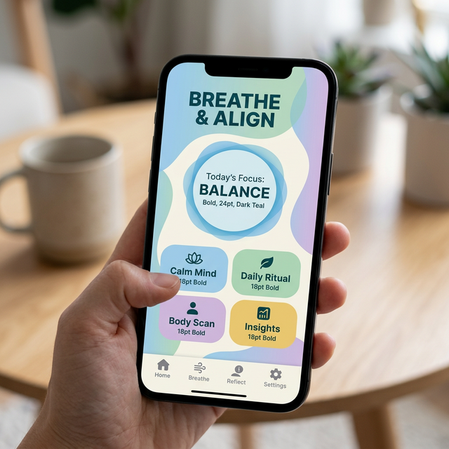

Building Trauma-Informed Digital Experiences for Survivors and At-Risk Communities

Designing for Cognitive Load
The tech industry’s default stance on web design prioritizes engagement, time-on-page, and converting visitors into metrics. When designing digital experiences for anti-trafficking organizations, shelters, or direct advocacy groups, that entire paradigm must be discarded.
A survivor attempting to navigate an intake form or seeking the location of emergency legal aid is not a "user" to be engaged; they are a human being operating under immense stress, often with severely reduced cognitive bandwidth. Designing a "Trauma-Informed Digital Experience" means acknowledging this reality in every pixel, color choice, and button placement.
1. Clarity Trumps Aesthetics
When a person’s nervous system is highly elevated, complex terminology and abstract navigation menus become insurmountable barriers.
The Approach: Use blunt, direct language. Instead of a menu button reading "Restorative Pathways," use "Get Help." Instead of requiring a survivor to click through three landing pages to find an emergency hotline, place the hotline directly in the persistent top navigation bar of the site. Fonts must be stark, highly legible, and strongly contrasted against their background (Strict adherence to WCAG AAA accessibility).
2. Avoid Triggering Narratives & Imagery
Many anti-trafficking organizations unintentionally lean into "shock value" to secure donor funding. This often manifests on the homepage as grim, sensationalized stock photos of individuals in chains, dark alleyways, or deeply upsetting survivor testimonials placed unavoidably center-screen.
The Approach: You must separate the donor-pitch from the survivor-service. A survivor reaching your site should feel immediately safe, respected, and dignified. Utilize a calming color palette (cool blues, greens, soft neutrals) and imagery focused on hope, community, and restoration. Do not force an exhausted individual to confront visual trauma while trying to fill out a housing application.
3. Predictability and Consent in UX
Trauma is inherently a loss of control. A trauma-informed interface seeks to hand control back to the individual. When a digital environment acts unpredictably—like unexpectedly playing an autoplay video with sound, or suddenly launching a popup urging a newsletter signup—it replicates the anxiety of losing control.
The Approach: Eradicate pop-ups. Ensure forms clearly state precisely why demographic information is being requested and how it will be protected. Allow users to save their progress on long forms and return later, rather than forcing completion under pressure. Give them the absolute right to skip narrative questions if they are not ready to recount their history.
Conclusion: Building Trust Digitally
Building a trauma-informed website is not about limiting functionality; it is about refining it to its most compassionate form. True empathy in engineering does not just mean feeling bad for the end-user; it means tearing out any line of code that creates unnecessary friction on their path to safety.
If your organization's digital presence prioritizes aesthetics over accessibility, it is time to pivot.
Does your site build trust?
We specialize in designing compassionate, accessible web experiences for frontline nonprofits.
Schedule a Design Audit